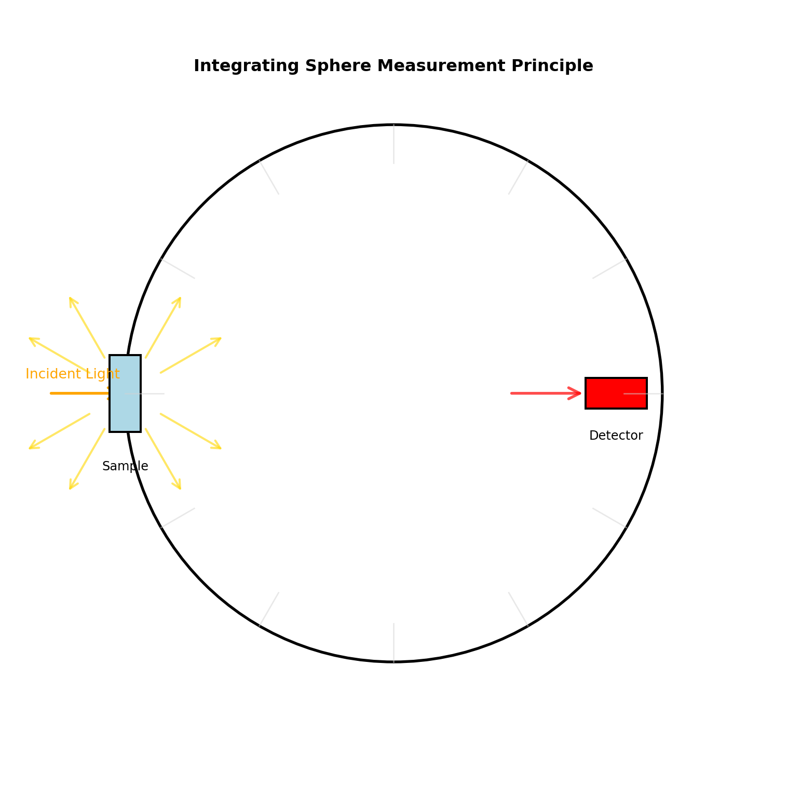
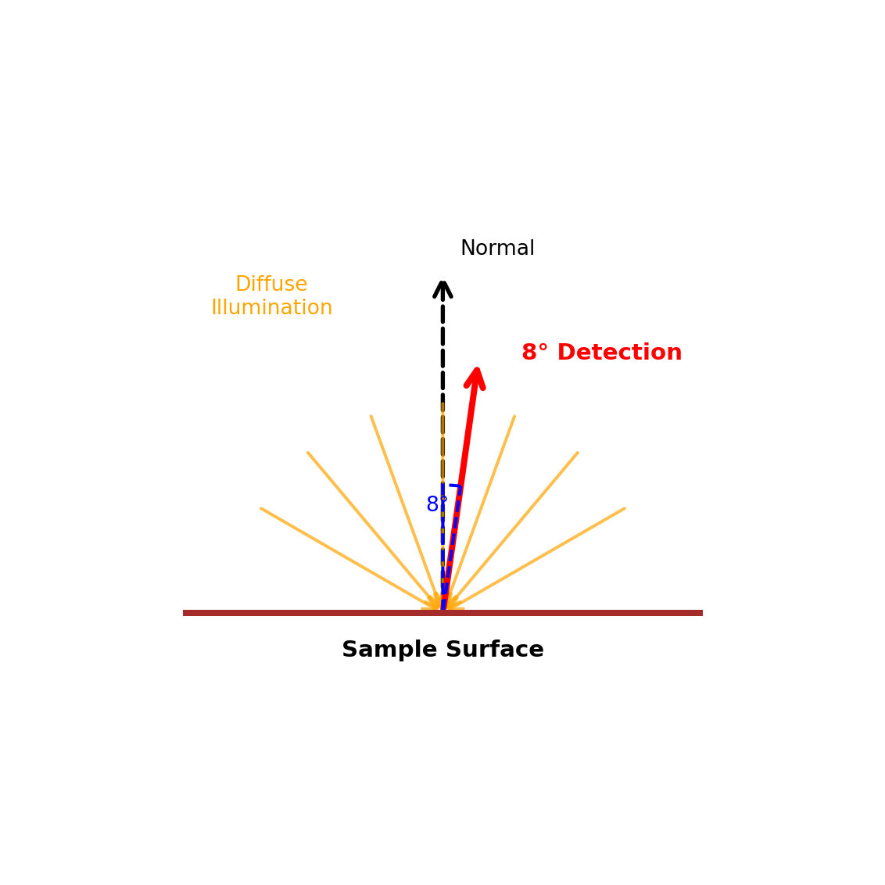
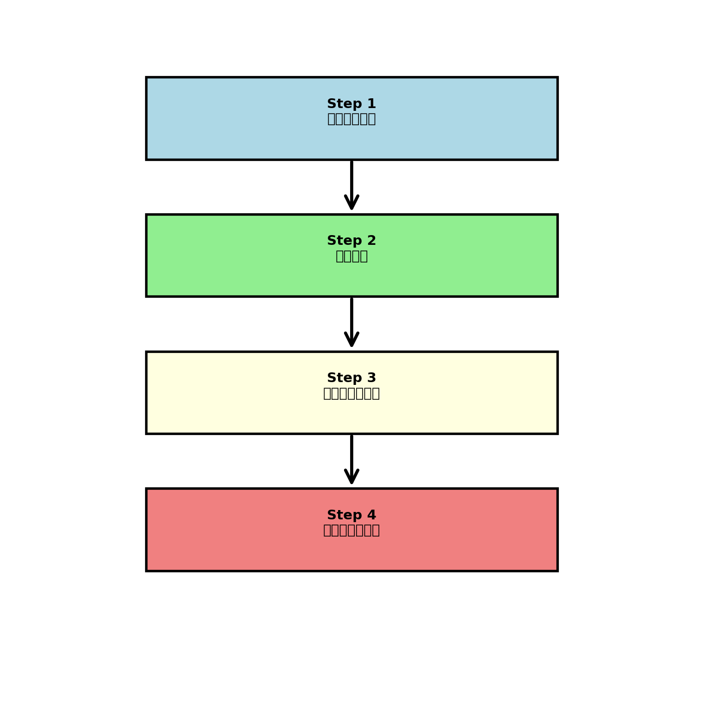
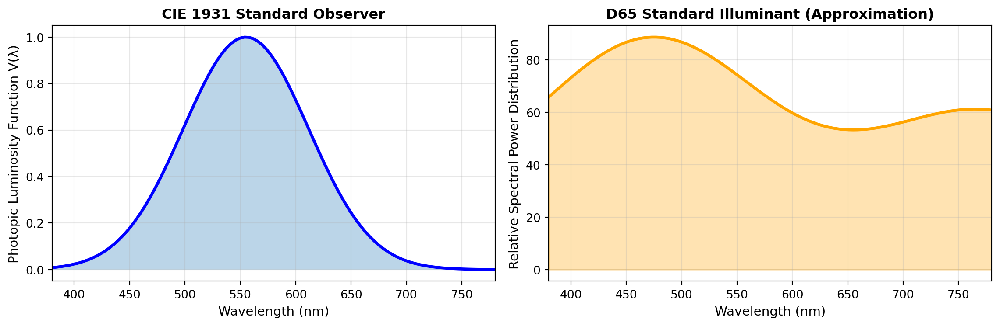

積分球を用いた分光反射率測定
照明工学・室内環境評価のための標準測定法
はじめに
1. 積分球（Integrating Sphere）の原理
1.1 なぜ積分球が必要なのか
壁や天井のような拡散反射面は、入射光を全方向に散乱させます。この全方向反射光を正確に捕捉しない限り、真の反射率を求めることはできません。
Note従来手法の課題
- 通常のカメラやセンサーは特定方向からの測定に限定される
- 測定角度により値が大きく変動する
- 表面の微小な凹凸や光沢の影響を分離できない
積分球は内面が高反射率コーティング（反射率 ≥ 0.95）で覆われており、内部で光を繰り返し反射させることで均一な光分布を実現します。
Important積分球の特性
積分球内では、光源の入射方向、試料表面の光沢、微小な凹凸による散乱方向の違いが全て平均化されます。これにより方向に依存しない真の反射率が測定可能になります。
2. 測定構成と方式
2.1 d/8° 方式（拡散入射・8° 受光）
照明工学における標準的な測定構成です。
| 要素 | 説明 |
|---|---|
| d (diffuse) | 積分球内で光を拡散させ、試料へ全方向から均一照射 |
| 8° | 検出器を試料面法線から8°の位置に配置 |

Tipなぜ8°なのか？
8°配置により、試料表面の正反射成分（ハイライト）を直接測定しない構成になります。これにより、光沢の影響を制御した測定が可能です。
2.2 正反射成分（Specular Component）の扱い
測定モードには2種類あります：
正反射を含む測定
- 光沢によるハイライトも含めて測定
- 材料の「見た目」の光沢を評価
- 視覚評価に近い値
正反射を除外した測定
- 光沢成分をシャッターで遮蔽
- 表面の純粋な拡散反射率のみ測定
- 照明計算・環境評価の標準
Important照明工学における推奨
室内光環境の照度計算やグレア評価では、SCE値が標準として使用されます。
3. 測定手順

3.1 Step 1：標準白板測定
Spectralon（反射率 ≈ 0.99）などの標準白板を測定し、測定系の基準とします。
Note標準白板の役割
- 積分球・分光器の計測系の「癖」を補正
- 光源スペクトルの不均一性を補正
- 球内の幾何学的不均一を補正
例： 白板（真値 0.99）が「0.97」と測定された場合 → 測定系が3%暗めに出ることを把握
3.2 Step 2：試料測定
標準白板と完全に同一条件で試料を測定します。
- 同じ照射条件
- 同じ配置位置
- 同じ測定角度
- 波長ごとの反射光強度を記録
3.3 Step 3：白板値による正規化
波長 \(\lambda\) における反射率は次式で算出されます：
\[ \rho(\lambda) = \frac{L_{\text{sample}}(\lambda)}{L_{\text{white}}(\lambda)} \times \rho_{\text{white}}(\lambda) \tag{1}\]
ここで：
- \(L_{\text{sample}}(\lambda)\)：試料の測定値
- \(L_{\text{white}}(\lambda)\)：白板の測定値
- \(\rho_{\text{white}}(\lambda)\)：白板の既知の反射率
Important
この正規化により、装置誤差・光源スペクトルのムラ・球内の不均一性が全て補正されます。
3.4 Step 4：可視反射率への統合
照明工学で使用する単一の反射率値は、視感度と光源スペクトルによる重み付き平均です：
\[ \rho_v = \frac{\int \rho(\lambda) \cdot V(\lambda) \cdot S(\lambda) \, d\lambda}{\int V(\lambda) \cdot S(\lambda) \, d\lambda} \tag{2}\]
ここで：
- \(V(\lambda)\)：比視感度（人間の目の感度曲線）
- \(S(\lambda)\)：光源の分光分布（例：D65標準光）

この可視反射率 \(\rho_v\) が、照明計算ソフト（DIALux、Radiance等）で使用される値です。
4. 測定時の注意点
Warning精度に影響する要因
- 試料面の角度精度
- 1°のずれで測定誤差が増大
- 特にSCE（光沢除去）モードでは致命的
- 局所的なテクスチャ・汚れ
- 壁紙などは表面が不均一
- 複数点での平均測定が必須
- 外乱光の除去
- 環境光が入射すると入射光束の定義が崩壊
- 完全な遮光が必要
- 測定口の密着性
- 積分球から光が漏れると全測定値が無効化
- 壁面に対する平面密着領域の確保
5. まとめ：積分球測定の優位性
積分球を用いた分光反射率測定が標準法とされる理由：
Tip主要な利点
- 方向依存性の完全排除 — 拡散面の真の反射率を測定
- 分光レベルの精度 — 波長ごとの詳細な物性値取得
- 基準白板による補正 — 装置誤差の系統的補正
- 国際標準準拠 — JIS/CIE規格に基づく測定法
- 学術・実務両対応 — 研究論文から実務計算まで通用
Note応用分野
- 建築照明設計における反射率データベース構築
- 省エネルギー性能評価
- 室内環境シミュレーション
- 材料開発における光学特性評価
参考文献
- CIE 15:2018 — Colorimetry
- JIS Z 8722 — 色の測定方法
- ASTM E903 — Standard Test Method for Solar Absorptance, Reflectance, and Transmittance of Materials